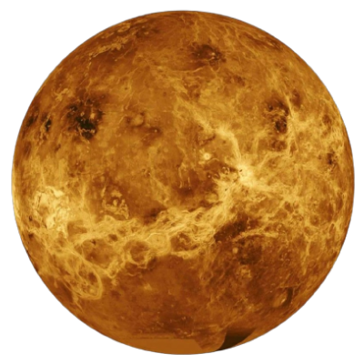

Найближча до Сонця планета Сонячної системи. Обертається навколо Сонця за 87,969 земних діб. Меркурій належить до внутрішніх планет, оскільки його орбіта лежить ближче до Сонця, ніж пояс астероїдів. Після позбавлення Плутона статусу планети Меркурій є найменшою планетою Сонячної системи.
